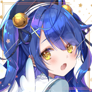
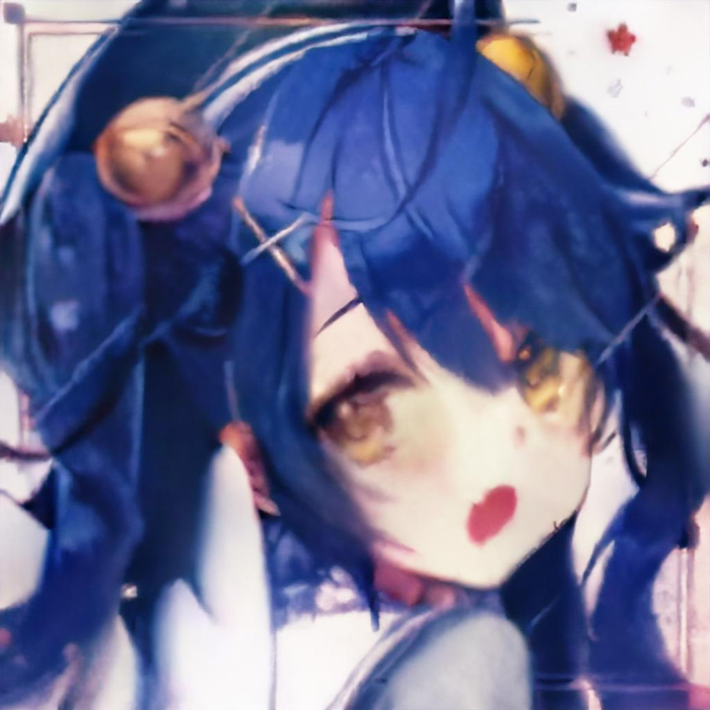
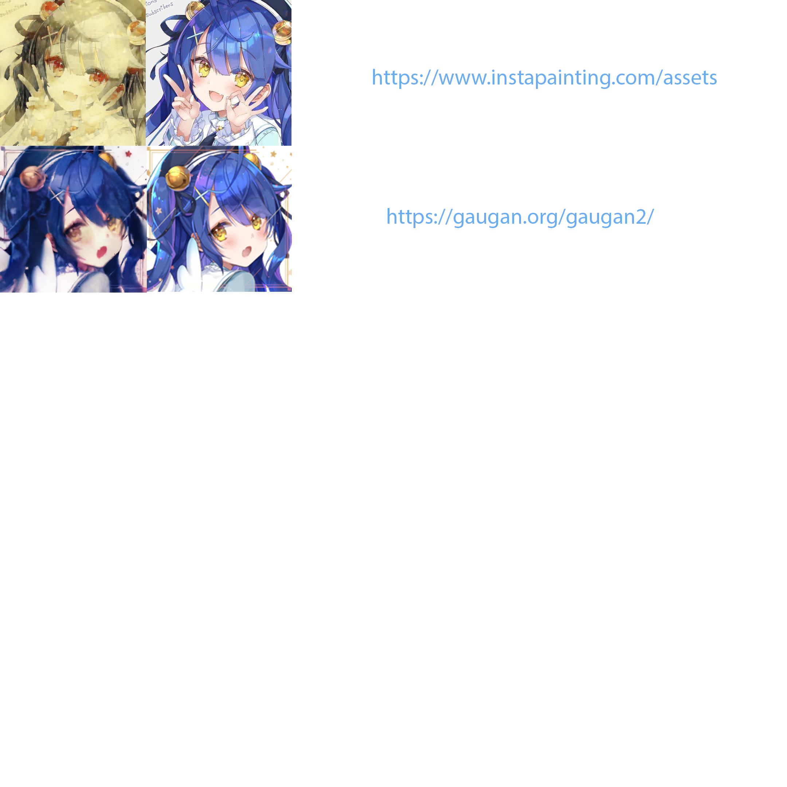

AI drawing

 I used the website instapainting to generate a picture of Kokolo. It turns the origin drawing color to anther. It seems that the AI had drawn a picture, but instead it just change the formet of the drawing without understanding who was Kokolo, how Kokolo look like, it is a lack of respect to the author and art.
I used the website instapainting to generate a picture of Kokolo. It turns the origin drawing color to anther. It seems that the AI had drawn a picture, but instead it just change the formet of the drawing without understanding who was Kokolo, how Kokolo look like, it is a lack of respect to the author and art.
  The second picture in gernerate by website called gaugan. It also changed the picture in only color, but without understanding. So in my opinion, AI drawing can never replace human art because it is simply just coping without soal.
